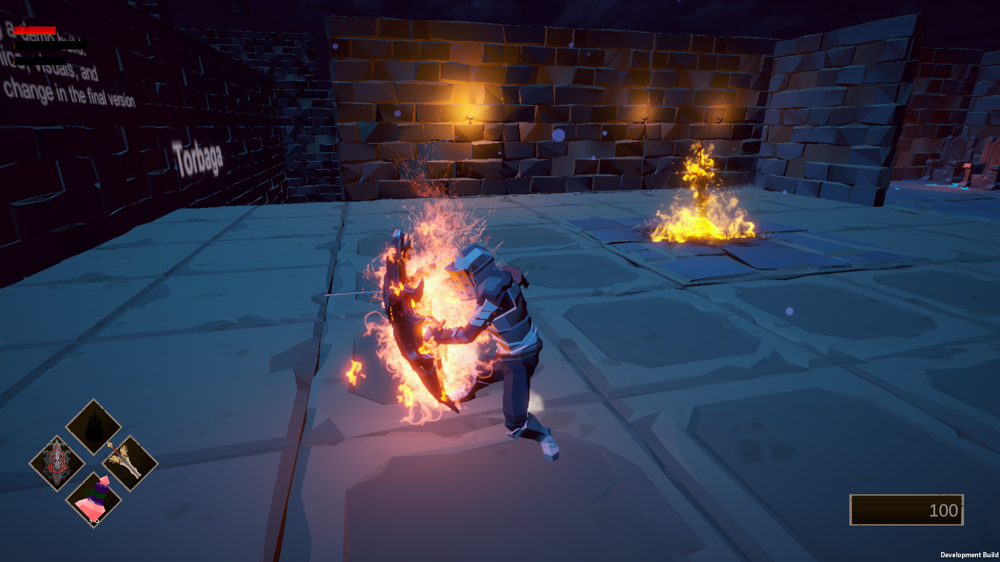
Weapon skills
Use a weapon skill to add a special move to your loadout.
EQUIPMENT AND ITEMS
Explore some of the weapons, tools, and abilities in Rayker Riz.
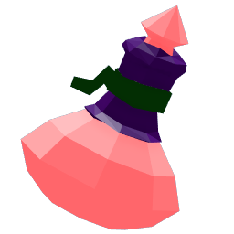
Heal PotionRestores health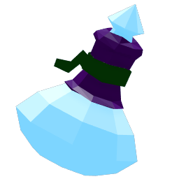
Chi FlaskRestores chi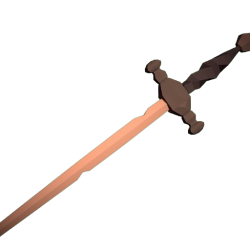
Shadow KatanaA weapon for fighting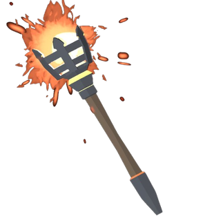
TorchLights the way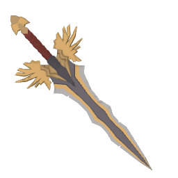
Royal SwordA legendary sword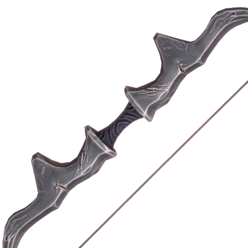
BowA weapon for ranged attacks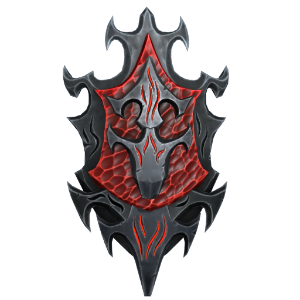
Wooden ShieldHelps block attacks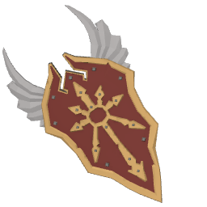
God ShieldA shield for defense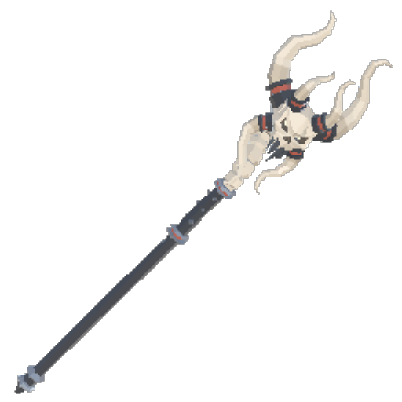
CharmA useful item to carry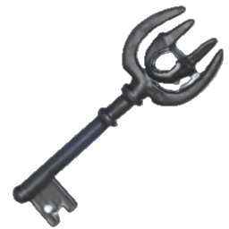
Lord's RuneA rune from the item collection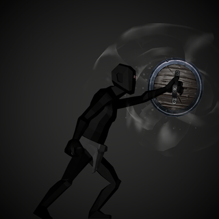
ParryA skill used to counter attacks Warden's KeyA key item from the archive
Warden's KeyA key item from the archiveCOMBAT AND CHARACTER BUILDS

Combat uses timing, positioning, and preparation. Your weapons, shields, abilities, items, and character stats all help shape your play style.

Use a weapon skill to add a special move to your loadout.
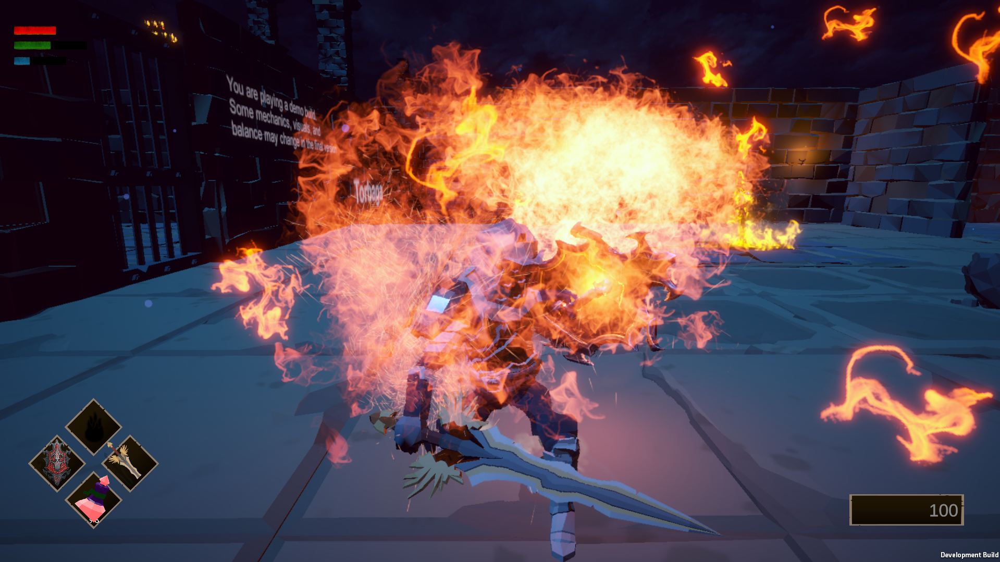
Use abilities and defensive moves to respond to danger.
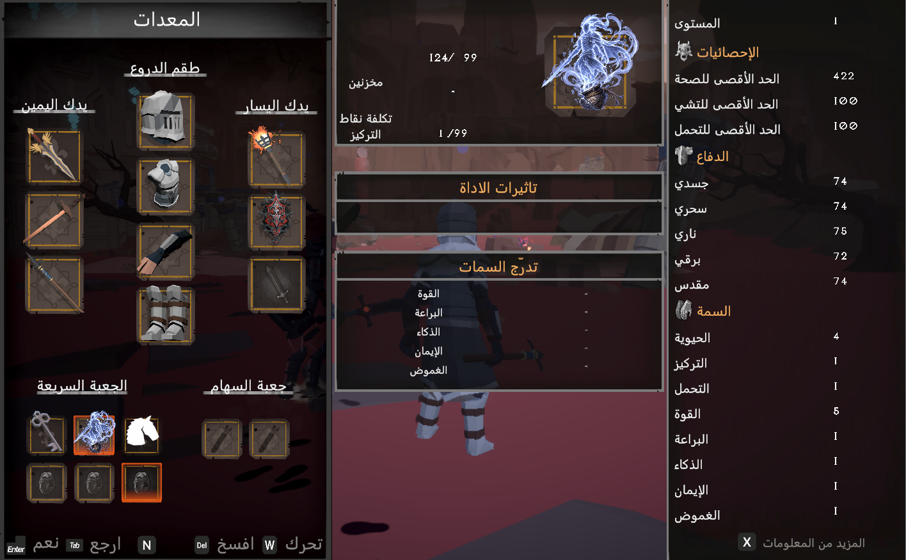
Choose equipment and attributes that fit the way you want to play.
MULTIPLAYER ITEMS
The original item guide includes tools for co-op play and invasions.
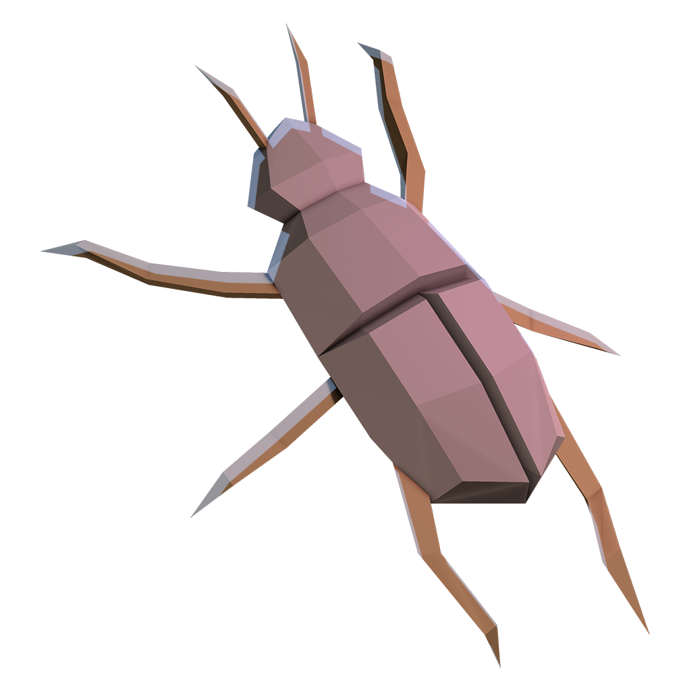
Creates a sign that lets another player join for co-op.
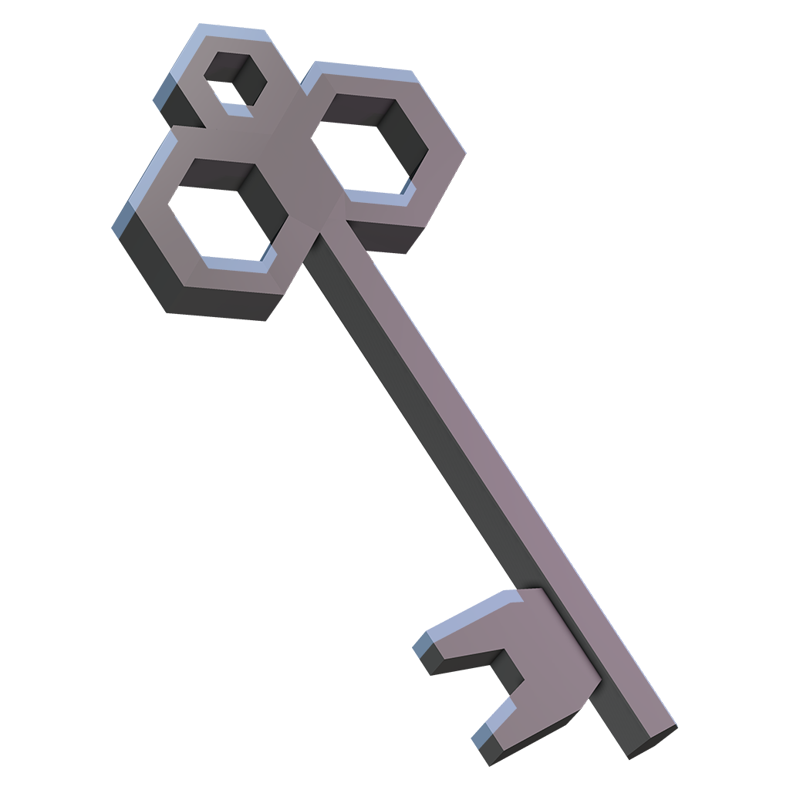
Attempts to enter another player's world for an invasion.